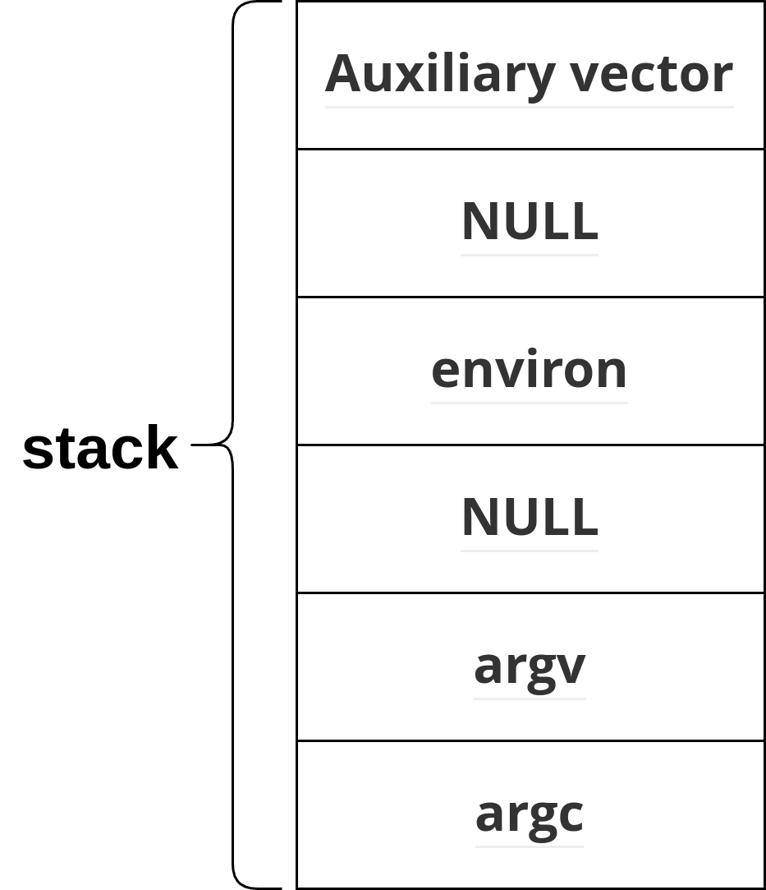

动态链接相关结构
动态链接相关结构
Auxiliary vector
简介
我们知道动态链接的程序的加载过程分成如下三步
- 内核加载动态链接器ld.so，并为可执行文件创建相关进程，设置好进程的部分信息
- 内核将控制权限交给动态链接器，动态链接器加载应用程序以及其需要使用到的动态库
- 程序加载完后，控制权限交给可执行文件
在第二步中，动态链接器需要知道可执行文件和本进程的一些辅助信息，例如动态链接器最后需要将控制权限交给可执行文件，那么动态链接器在加载可执行文件时，需要知道该可执行文件的入口地址才行。因为内核在加载动态链接器时，已经得到了这些辅助信息，所以可以保存在进程的堆栈中，统一放置在Auxiliary vector，即辅助信息数组中。因此进程初始化时，其堆栈结构如下所示。
本质上，Auxiliary vector是内核 ELF 二进制加载器（内核源代码中的fs/binfmt_elf.c）在将新的可执行映像加载到进程时（其实内核只会加载ld.so，剩下的都是ld.so加载的）构建的键值对列表。其定义如下
1 | |
访问Auxiliary vector
在用户空间访问LD_SHOW_AUXV=1，有以下几种方式
手动遍历，通过进程初始化的堆栈结构可知，获取到argv后，第二个NULL之后便是Auxiliary vector
通过glibc的库函数getauxval（glibc2.16引入）访问指定的辅助信息，不过参考文档，该库函数的引入似乎没什么必要。示例如下
1
2
3
4
5
6
7#include <sys/auxv.h>
int main() {
printf("The page size of system: %d\n", getauxval(AT_PAGESZ));
return 0;
}每个进程创建后，其对应的auxiliary vector也存放在
/proc/PID/auxv文件中在shell中，可以通过在命令前设置
LD_SHOW_AUXV=1来查看auxiliary vector，示例如下1
2
3
4
5
6
7
8
9
10
11
12
13
14
15
16
17
18
19
20
21
22
23
24LD_SHOW_AUXV=1 ls
<<!
AT_SYSINFO_EHDR: 0x7fff721ae000
AT_??? (0x33): 0xe30
AT_HWCAP: bfebfbff
AT_PAGESZ: 4096
AT_CLKTCK: 100
AT_PHDR: 0x55d4c0948040
AT_PHENT: 56
AT_PHNUM: 13
AT_BASE: 0x7f0095502000
AT_FLAGS: 0x0
AT_ENTRY: 0x55d4c094e7d0
AT_UID: 1000
AT_EUID: 1000
AT_GID: 1000
AT_EGID: 1000
AT_SECURE: 0
AT_RANDOM: 0x7fff72196b39
AT_HWCAP2: 0x2
AT_EXECFN: /usr/bin/ls
AT_PLATFORM: x86_64
!
被使用的地方
在动态链接器中，以下地方会用到这些辅助信息
- glibc的中的ifunc的resolver中，一般会检测cpu_features，这些信息是保存在类型为
AT_HWCAP*的辅助信息中的，AT_HWCAP*辅助信息是bit mask - 动态链接器将控制权限交移给可执行文件时，此时需要知道可执行文件的执行入口、
- 待补充
动态链接相关结构
http://example.com/动态链接相关结构/